<!DOCTYPE lake>
<h1 data-lake-id="juXpl" id="juXpl"><span data-lake-id="uee9939d8" id="uee9939d8">1&gt; 诞生与发展</span></h1><table class="lake-table" data-lake-id="hJ3RZ" id="hJ3RZ" margin="true" style="width: 727px" width-mode="contain"><colgroup><col width="285"/><col width="442"/></colgroup><tbody><tr data-lake-id="ueed14f5f" id="ueed14f5f"><td data-lake-id="u9fc83edf" id="u9fc83edf" style="background-color: #F5D480"><p data-lake-id="uad010bb9" id="uad010bb9" style="text-align: center"><span class="lake-fontsize-11" data-lake-id="ue6540899" id="ue6540899" style="color: rgb(51, 51, 51)">“C语言之父”</span></p></td><td data-lake-id="u24cb60a7" id="u24cb60a7" style="background-color: #F5D480"><p data-lake-id="u517a2d25" id="u517a2d25" style="text-align: center"><span data-lake-id="uaf9c8c4f" id="uaf9c8c4f">诞生与发展</span></p></td></tr><tr data-lake-id="u9f542bb7" id="u9f542bb7"><td data-lake-id="u31d9710c" id="u31d9710c"><p data-lake-id="uda312133" id="uda312133">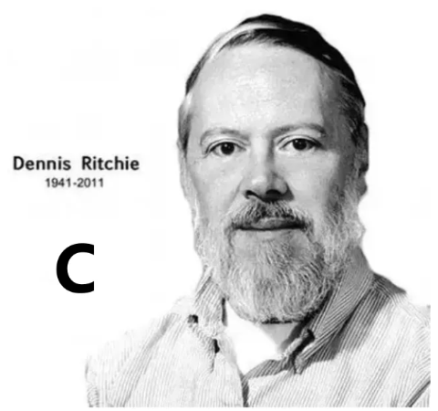</p></td><td data-lake-id="u3d2d9579" id="u3d2d9579"><p data-lake-id="u94b7545d" id="u94b7545d" style="text-align: left"><strong><span data-lake-id="u17750410" id="u17750410">1972</span></strong><span data-lake-id="u033e1337" id="u033e1337">年：Dennis Ritchie在贝尔实验室开发，最初用于重新UNIX操作系统；</span></p><p data-lake-id="u14fe4be9" id="u14fe4be9" style="text-align: left"><span data-lake-id="ufc5bdb8a" id="ufc5bdb8a">​</span><br/></p><p data-lake-id="uc7bc773d" id="uc7bc773d" style="text-align: left"><span data-lake-id="u92f89db7" id="u92f89db7">标准化：</span></p><p data-lake-id="uc0d4d181" id="uc0d4d181" style="text-align: left"><span data-lake-id="uef8d4fff" id="uef8d4fff">      C89(1989年) &gt;  </span><strong><span data-lake-id="ub5634816" id="ub5634816">C99</span></strong><span data-lake-id="u560366c8" id="u560366c8">(1999年) &gt;</span></p><p data-lake-id="u6ada11fd" id="u6ada11fd" style="text-align: left"><span data-lake-id="u8453b3c1" id="u8453b3c1">      C11(2011年) &gt;  C17(2018年)</span></p></td></tr><tr data-lake-id="u8e222ded" id="u8e222ded"><td data-lake-id="ueb856124" id="ueb856124"><p data-lake-id="u11ce6e4b" id="u11ce6e4b">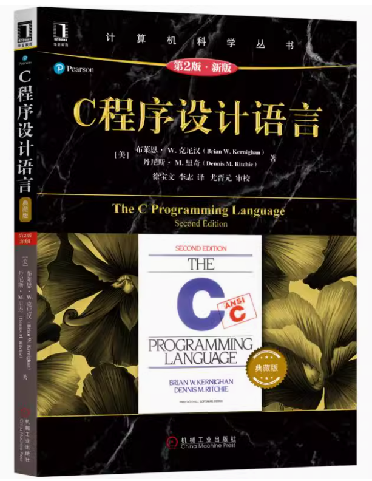</p></td><td data-lake-id="u3acdbf8d" id="u3acdbf8d"><p data-lake-id="u6822dd3e" id="u6822dd3e" style="text-align: left"><span data-lake-id="u47fdc751" id="u47fdc751">C语言价值：</span></p><p data-lake-id="u21af068d" id="u21af068d" style="text-align: left"><span data-lake-id="u5ac435f9" id="u5ac435f9">✅</span><span data-lake-id="u6c0618bd" id="u6c0618bd">基础性：</span></p><p data-lake-id="u3c0c6430" id="u3c0c6430"><span data-lake-id="uf0c3d3f0" id="uf0c3d3f0">     现代编程语言的“母语”，影响C++/Java/Python等；</span></p><p data-lake-id="u5816cf14" id="u5816cf14"><span data-lake-id="u7b60373c" id="u7b60373c">✅</span><span data-lake-id="ucd404c64" id="ucd404c64">高效性：</span></p><p data-lake-id="u4aa54401" id="u4aa54401"><span data-lake-id="uc065abf8" id="uc065abf8">     直接内存操作，指针机制，编译型语言；</span></p><p data-lake-id="u4bf558bb" id="u4bf558bb"><span data-lake-id="uc1443b3d" id="uc1443b3d">✅</span><span data-lake-id="ufa6369dd" id="ufa6369dd">不可替代性：</span></p><p data-lake-id="ucb359c33" id="ucb359c33" style="padding-left: 2em"><span data-lake-id="ua59df785" id="ua59df785">操作系统，嵌入式开发的核心语言；</span></p></td></tr></tbody></table><hr/><h1 data-lake-id="evxNP" id="evxNP"><span data-lake-id="u7338b385" id="u7338b385">2&gt; 典型应用</span></h1><p data-lake-id="u6610ce85" id="u6610ce85"><span class="lake-fontsize-14" data-lake-id="u37d21366" id="u37d21366">🚀</span><span class="lake-fontsize-14" data-lake-id="ue0c1a6f4" id="ue0c1a6f4"> 单片机开发：</span></p><table class="lake-table" data-lake-id="AtJuO" fit-width="true" id="AtJuO" margin="true" style="width: 750px" width-mode="normal"><colgroup><col width="250"/><col width="250"/><col width="250"/></colgroup><tbody><tr data-lake-id="u2ef860f8" id="u2ef860f8"><td data-lake-id="u2b41518b" id="u2b41518b" style="background-color: #F5D480"><p data-lake-id="ufaf7ee0f" id="ufaf7ee0f" style="text-align: center"><strong><span data-lake-id="u734b221a" id="u734b221a">51单片机</span></strong></p></td><td data-lake-id="u666352cc" id="u666352cc" style="background-color: #F5D480"><p data-lake-id="u5216fba9" id="u5216fba9" style="text-align: center"><strong><span data-lake-id="u90f028ee" id="u90f028ee">GD32/STM32</span></strong></p></td><td data-lake-id="u46e9d887" id="u46e9d887" style="background-color: #F5D480"><p data-lake-id="ua3eadb6c" id="ua3eadb6c" style="text-align: center"><strong><span data-lake-id="uc6af74d0" id="uc6af74d0">ESP32</span></strong></p></td></tr><tr data-lake-id="u6b4e865b" id="u6b4e865b"><td data-lake-id="u5bf61c48" id="u5bf61c48"><p data-lake-id="ub77eb66c" id="ub77eb66c">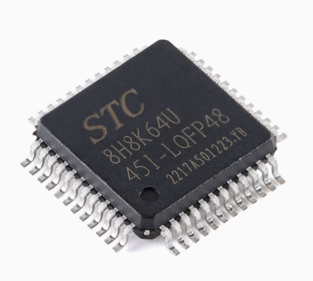</p></td><td data-lake-id="u49ea5ca2" id="u49ea5ca2"><p data-lake-id="u21f99467" id="u21f99467">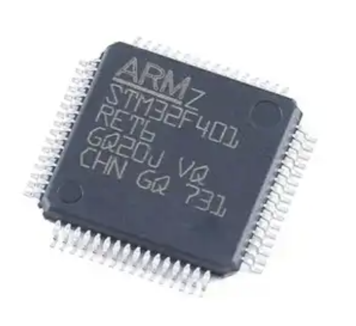</p></td><td data-lake-id="u74b3d911" id="u74b3d911"><p data-lake-id="u54771ae3" id="u54771ae3">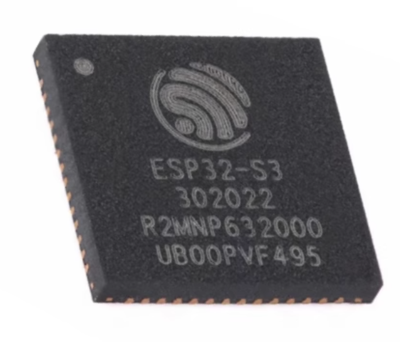</p></td></tr><tr data-lake-id="u38782a60" id="u38782a60"><td data-lake-id="ud62a6e30" id="ud62a6e30" style="vertical-align: middle"><p data-lake-id="ue42f9dde" id="ue42f9dde">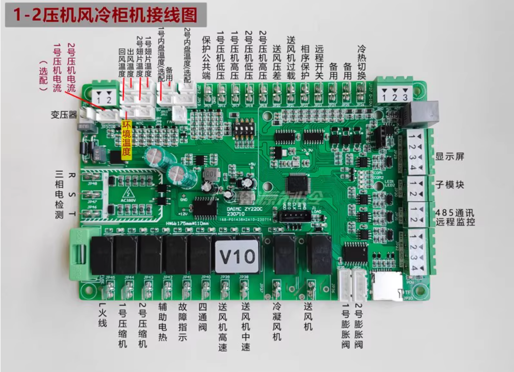</p></td><td data-lake-id="u434f1883" id="u434f1883" style="vertical-align: middle"><p data-lake-id="u3ce50ff2" id="u3ce50ff2">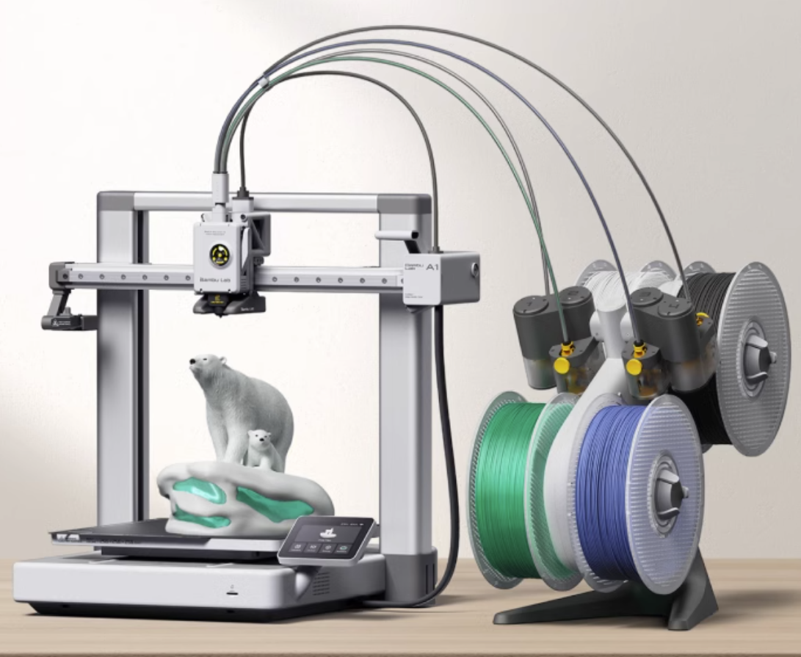</p></td><td data-lake-id="ub7643b02" id="ub7643b02" style="vertical-align: middle"><p data-lake-id="u60c2c702" id="u60c2c702"></p></td></tr></tbody></table><hr/><p data-lake-id="u61258f2f" id="u61258f2f"><span class="lake-fontsize-14" data-lake-id="u35839f3d" id="u35839f3d">🚀</span><span class="lake-fontsize-14" data-lake-id="u2dc0d593" id="u2dc0d593">操作系统：</span></p><p data-lake-id="udb8cca38" id="udb8cca38" style="text-indent: 2em"><span class="lake-fontsize-12" data-lake-id="u87adb6e1" id="u87adb6e1" style="color: #000000">C语言因其</span><strong><span class="lake-fontsize-12" data-lake-id="u88e50791" id="u88e50791" style="color: #000000">硬件控制能力</span></strong><span class="lake-fontsize-12" data-lake-id="ub1064f97" id="ub1064f97" style="color: #000000">、</span><strong><span class="lake-fontsize-12" data-lake-id="u07e34811" id="u07e34811" style="color: #000000">确定性执行</span></strong><span class="lake-fontsize-12" data-lake-id="u50fe4184" id="u50fe4184" style="color: #000000">和</span><strong><span class="lake-fontsize-12" data-lake-id="ud89996d0" id="ud89996d0" style="color: #000000">跨平台一致性</span></strong><span class="lake-fontsize-12" data-lake-id="ua8498eb6" id="ua8498eb6" style="color: #000000">，成为实时和通用操作系统的首选实现语言，尤其在需要兼顾性能和资源约束的嵌入式领域。</span></p><table class="lake-table" data-lake-id="R91Bx" id="R91Bx" margin="true" style="width: 750px" width-mode="contain"><colgroup><col width="250"/><col width="250"/><col width="250"/></colgroup><tbody><tr data-lake-id="u616994b7" id="u616994b7"><td data-lake-id="u8197e2ac" id="u8197e2ac" style="background-color: #81BBF8"><p data-lake-id="u0e5f407d" id="u0e5f407d" style="text-align: center"><span data-lake-id="u76ae5899" id="u76ae5899">​</span><strong><span data-lake-id="u38bfb97d" id="u38bfb97d">FreeRTOS</span></strong></p></td><td data-lake-id="u6367b1b1" id="u6367b1b1" style="background-color: #81BBF8"><p data-lake-id="uee1a1ec8" id="uee1a1ec8" style="text-align: center"><span data-lake-id="uc0d9f1ac" id="uc0d9f1ac">鸿蒙LiteOS</span></p></td><td data-lake-id="ue0ff9048" id="ue0ff9048" style="background-color: #81BBF8"><p data-lake-id="u7ed41db3" id="u7ed41db3" style="text-align: center"><strong><span data-lake-id="u4e5e8936" id="u4e5e8936">Linux内核</span></strong></p></td></tr><tr data-lake-id="u6ba6c0a8" id="u6ba6c0a8"><td data-lake-id="u58a54264" id="u58a54264" style="vertical-align: middle"><p data-lake-id="u350d4f0c" id="u350d4f0c"></p></td><td data-lake-id="u91ba4daa" id="u91ba4daa" style="vertical-align: middle"><p data-lake-id="u6aa02763" id="u6aa02763">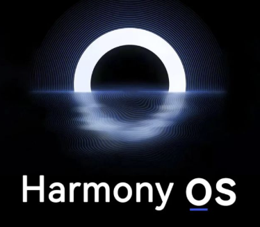</p></td><td data-lake-id="ud31c212e" id="ud31c212e" style="vertical-align: middle"><p data-lake-id="u90c2b6d2" id="u90c2b6d2">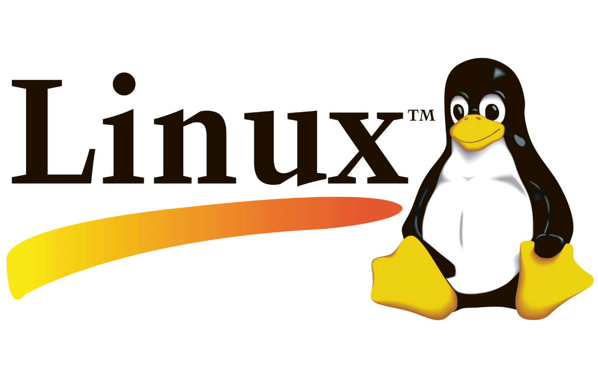</p></td></tr></tbody></table><hr/><h1 data-lake-id="Z31St" id="Z31St"><span data-lake-id="u12040477" id="u12040477">3&gt; 执行过程</span></h1><p data-lake-id="u0d3c2239" id="u0d3c2239">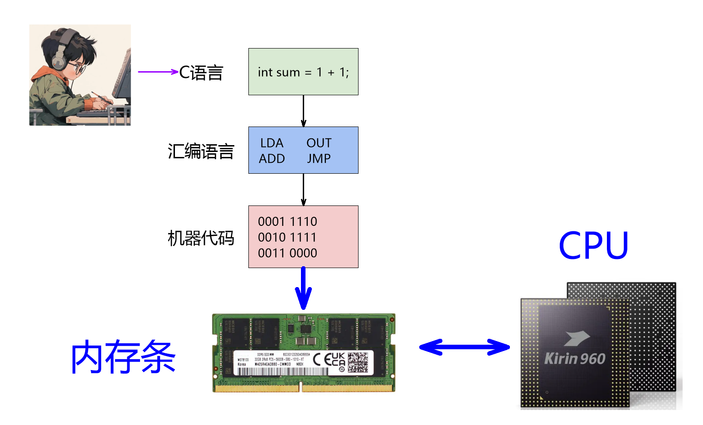</p><p data-lake-id="uf2c71c54" id="uf2c71c54"><span data-lake-id="u6ef392a8" id="u6ef392a8">程序员最高境界：心中有内存，脑中有逻辑，眼睛是编译器！</span></p><hr/><p data-lake-id="u4541572f" id="u4541572f"><br/></p><h1 data-lake-id="G5KAj" id="G5KAj"><span data-lake-id="ue5440a87" id="ue5440a87" style="color: rgb(51, 51, 51)">4&gt; 学习方法</span></h1><p data-lake-id="ub4ddeb2f" id="ub4ddeb2f"><span class="lake-fontsize-16" data-lake-id="ufd581dba" id="ufd581dba">🏆</span><strong><span class="lake-fontsize-12" data-lake-id="uf889fe17" id="uf889fe17" style="color: #DF2A3F">3：7</span></strong><span class="lake-fontsize-12" data-lake-id="uc1788fb6" id="uc1788fb6">黄金比例法：30%的时间理论学习；70%的时间实践编程；</span></p><table class="lake-table" data-lake-id="PJuwm" id="PJuwm" margin="true" style="width: 629px" width-mode="contain"><colgroup><col width="254"/><col width="375"/></colgroup><tbody><tr data-lake-id="u89495ce2" id="u89495ce2"><td data-lake-id="u0c8c8415" id="u0c8c8415"><p data-lake-id="u5efdd340" id="u5efdd340"></p></td><td data-lake-id="u81f3cb4f" id="u81f3cb4f" style="vertical-align: middle"><p data-lake-id="u40008f92" id="u40008f92"></p></td></tr><tr data-lake-id="u534044c0" id="u534044c0"><td colspan="2" data-lake-id="u8b03ac5f" id="u8b03ac5f"><p data-lake-id="u78a7213d" id="u78a7213d" style="text-align: center">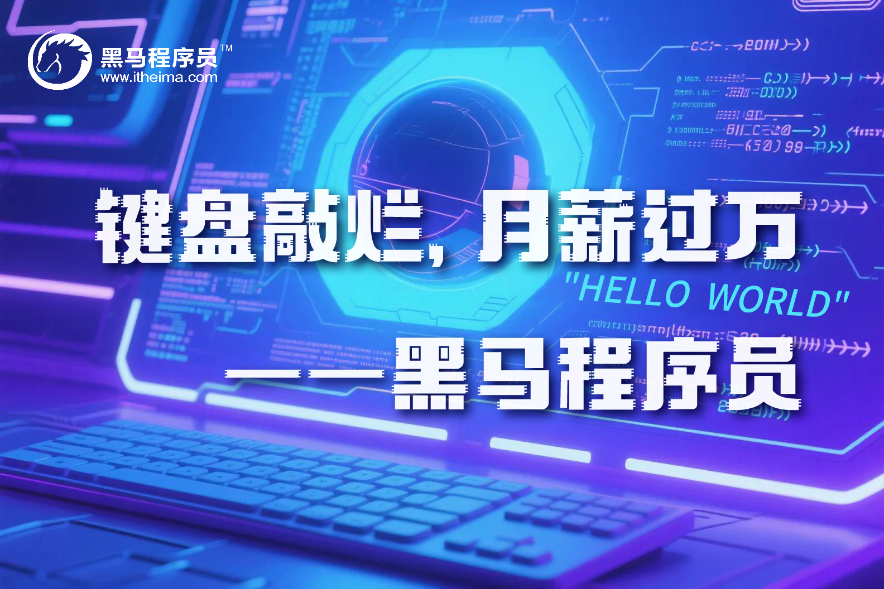</p></td></tr></tbody></table><hr/><h1 data-lake-id="YQRq7" id="YQRq7"><span data-lake-id="uc6bc3c84" id="uc6bc3c84">5&gt; 编程语言创始人</span></h1><table class="lake-table" data-lake-id="vPdgc" id="vPdgc" margin="true" style="width: 749px" width-mode="contain"><colgroup><col width="375"/><col width="374"/></colgroup><tbody><tr data-lake-id="u6fc68e62" id="u6fc68e62"><td data-lake-id="ua98c7f31" id="ua98c7f31"><p data-lake-id="u552cd1d9" id="u552cd1d9"><span class="lake-fontsize-11" data-lake-id="u707d0aa1" id="u707d0aa1" style="color: rgb(51, 51, 51)">丹尼斯·里奇（Dennis Ritchie）</span></p><p data-lake-id="u0399b763" id="u0399b763">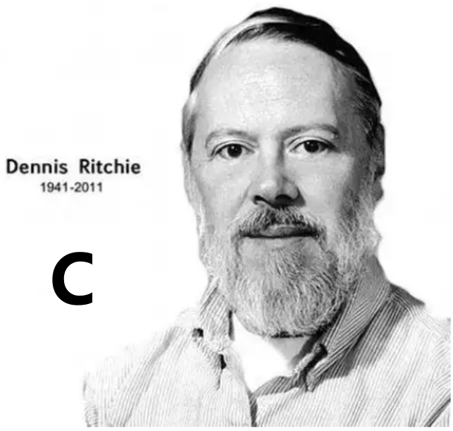</p></td><td data-lake-id="u912181d8" id="u912181d8"><p data-lake-id="uaa9df770" id="uaa9df770"><span class="lake-fontsize-11" data-lake-id="u83adbd6e" id="u83adbd6e" style="color: rgb(51, 51, 51)">吉多·范罗苏姆(Guido van Rossum)</span></p><p data-lake-id="uf929c8d8" id="uf929c8d8">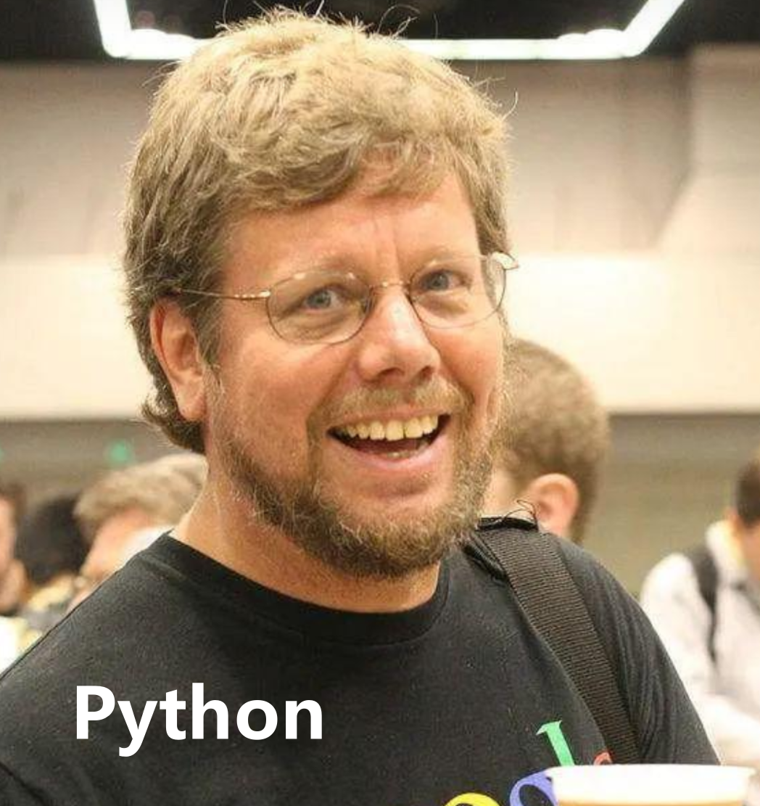</p></td></tr><tr data-lake-id="ueeb71c7e" id="ueeb71c7e"><td data-lake-id="ub89e155c" id="ub89e155c"><p data-lake-id="u71fc9b52" id="u71fc9b52"><span class="lake-fontsize-11" data-lake-id="uec04a4b6" id="uec04a4b6" style="color: rgb(34, 34, 34)">本贾尼·斯特劳斯特卢普（Bjarne Stroustrup）</span></p><p data-lake-id="ua88c02ee" id="ua88c02ee">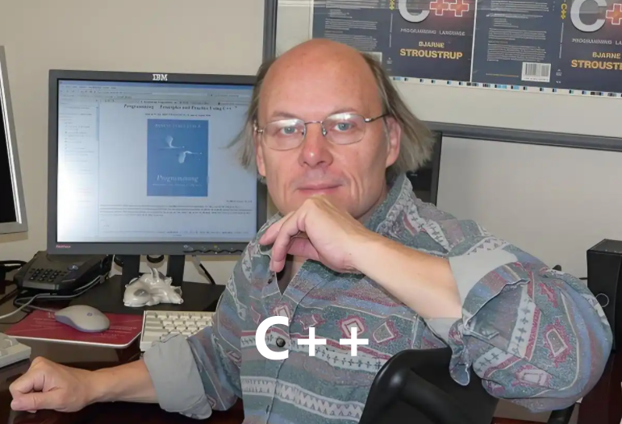</p></td><td data-lake-id="uf2071106" id="uf2071106"><p data-lake-id="u7b58b95c" id="u7b58b95c"><span class="lake-fontsize-11" data-lake-id="u1cdc33ab" id="u1cdc33ab" style="color: rgb(51, 51, 51)">詹姆斯·高斯林 （James Gosling）</span></p><p data-lake-id="u0eb4d813" id="u0eb4d813">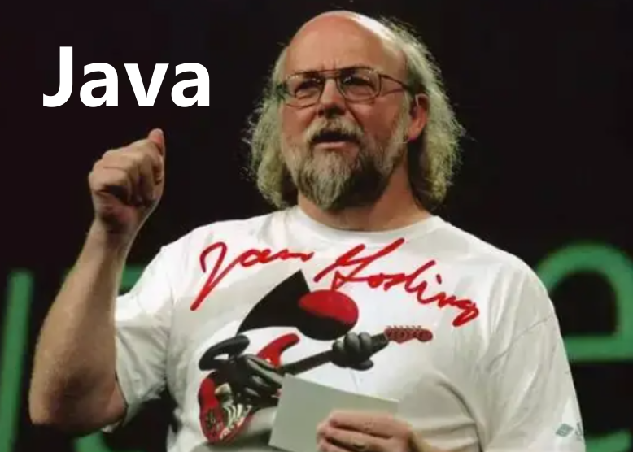</p></td></tr></tbody></table>